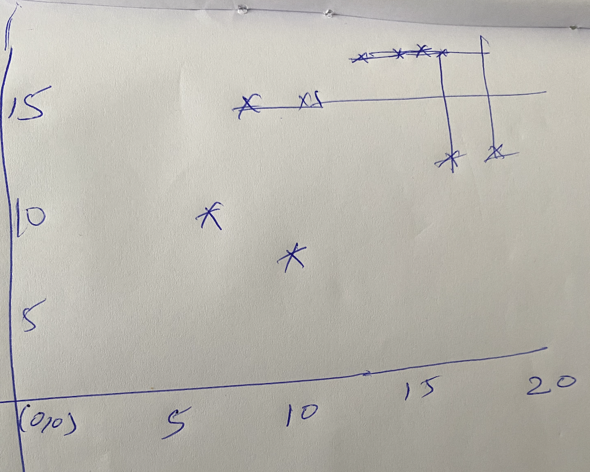
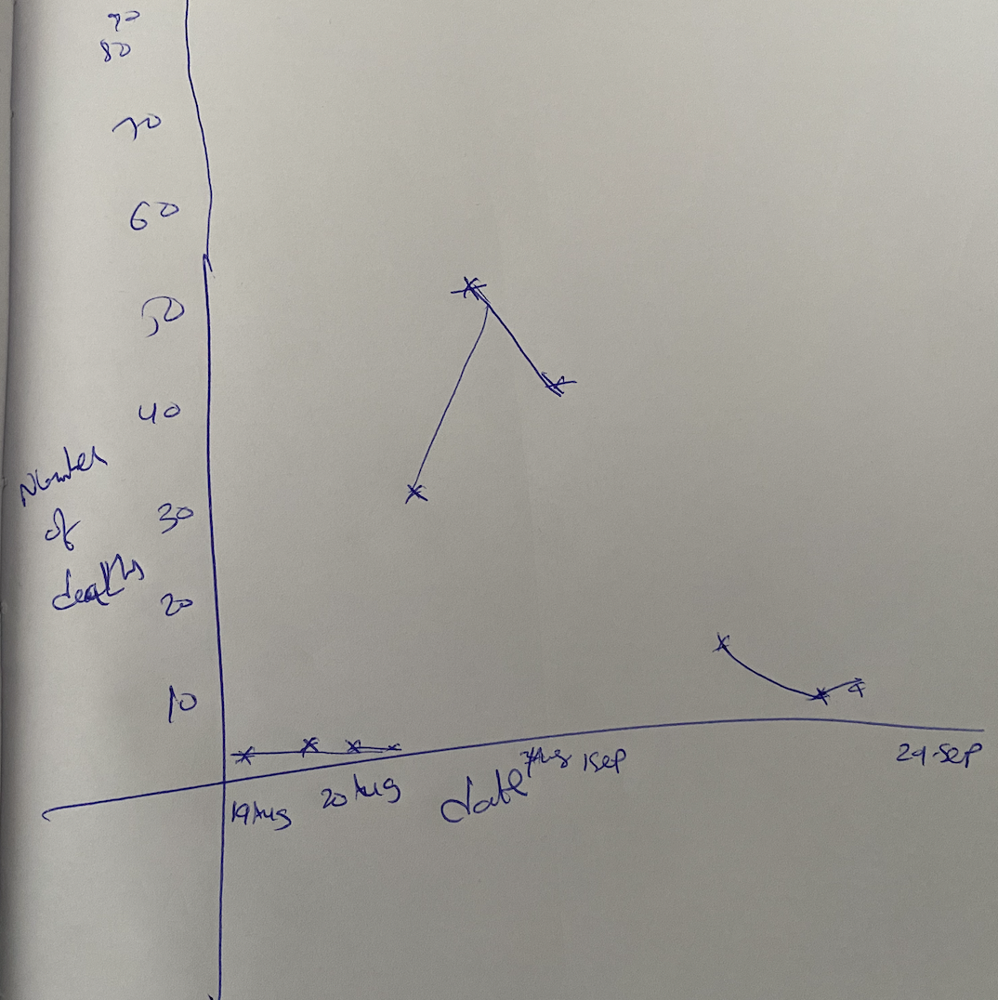
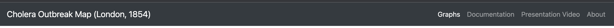

Introduction of 1854 London Cholera Outbreak
"
Due to a significant influx of people and a lack of effective sanitary facilities, the Soho district
of London had a serious dirt problem in the mid-19th century.
Many cellars had cesspools beneath their floorboards, which formed as a result of sewage and dirt leaking in from outside.
The London administration decided to throw the sewage into the River Thames to contaminate the water supply since the cesspools were overflowing.
people."(Wikipedia,[1])
Background before investigation by John Snow
Because of the foul odor, many people assumed it was an airborne sickness.
When John Snow treated a patient with diarrhea symptoms, he was able to determine that it was a waterborne illness.
Though he was a physician,his investigation and map aided him in locating the Broad Street Pump.
Design of Cholera Map Visualization
-
First, I thoroughly reviewed each of the four datasets that had been utilized to create Visualization.
-
Following the observation of streets. I prefer to add lines between
each coordinate in a json file that contains coordinates so that we can generate a basic map layout.I plotted a rough sketch on my paper.
After seeing the rough sketch thought of creating a line graph using svgContainer in d3.js.

-
After examining through the deathagesex and deathdays files, which contain coordinates, age and gender,
and the date and count of deaths for each data point, I came up with the idea of mapping circles to each data point and we can filter on age and gender.
-
After I examined the pump data file, I downloaded a pump image and plotted a pump on each data point.
-
After going through the deathdays datafile,mapping each data point with deaths on the y axis and dates on the x axis, a line graph was formed.
Tried implementing a line graph in a paper.

-
The colors used in the cholera map display have labels assigned to them and they were chosen from the Color Brewer website, all of the colors chosen will stay effective for color blindness.[8]
-
The line graph interacts with the cholera map; for example, when you click the dot on the line graph,
the number of deaths plotted on the cholera map are presented till the date.
- One can zoom in and out on the cholera map and adjust accordingly and click to see all the values on the map.
- Page Header layout is constructed using navbar.

-
When you clicked on Cholera Outbreak Map(London, 1854) the webpage will get refreshed.
-
The Presentation Video tab includes a brief video explanation of how this visualization works.
Tools & Frameworks
- HTML
- CSS
- Javascript
- D3.js
- Bootstrap
References
-
https://en.wikipedia.org/wiki/1854_Broad_Street_cholera_outbreak
-
https://www.youtube.com/watch?v=lNjrAXGRda4
-
https://d3js.org/
-
https://getbootstrap.com/docs/4.0/components/navbar/
-
https://getbootstrap.com/docs/4.0/content/tables/
-
https://www.d3indepth.com/zoom-and-pan/
-
https://www.educative.io/edpresso/how-to-create-a-line-chart-using-d3
-
https://colorbrewer2.org/#type=sequential&scheme=BuGn&n=3